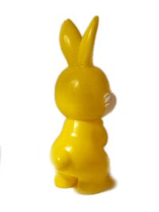
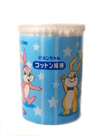
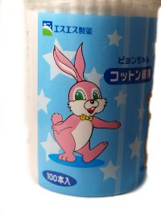

なないろまーぶる おまけコレクション

- なないろまーぶるTop
- >> Collection
- >> ピョンちゃん
- >> 指人形
9代目ピョンちゃん
9代目ピョンちゃんピンク
現在のピョンちゃん。天神さんで購入。約12㎝（2008入手）
9代目ピョンちゃんきいろ

こちらも天神さんで購入。約12㎝（2008入手）
9代目ピョンちゃん綿棒


薬を購入したときのおまけです。（2006入手）
9代目ピョンちゃん音楽
弘法さん（東寺）で見つけました。柔らかいソフビ製。（2009入手）
最終更新 2009.04.01
なないろまーぶるはYahoo!カテゴリに登録されています。